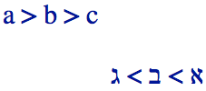

Bidi algorithm basics
Characters and directional typing
We already know that a sequence of Latin characters is rendered (ie. displayed) one after the other from left to right (we can see that in the text you are currently reading). On the other hand, the bidi algorithm will render a sequence of Arabic or Hebrew characters one after the other from right to left.

How does your browser know whether this is a sequence of left-to-right or right-to-left characters? Because each character in Unicode has an associated directional property. Most letters are strongly typed as LTR (left-to-right). Letters from right-to-left scripts are strongly typed as RTL (right-to-left).
A sequence of strongly-typed RTL characters will be displayed from right to left. This is independent of the surrounding base direction.
Directional runs
When text with different directionality is mixed inline, the bidi algorithm produces a separate directional run out of each sequence of contiguous characters with the same directionality.
So in the following example there are three directional runs:

Note that you don't need any markup or styling to make this happen.
Base direction, a fundamentally important concept
The order in which text is displayed depends on the base direction assigned to the phrase, paragraph or block that contains it. The base direction is a fundamentally important concept. It establishes a directional context that the bidi algorithm refers to at various points to decide how to handle the text.
In HTML the base direction is either set explicitly by the nearest parent element that uses the dir attribute, or, in the absence of any such attribute, is inherited from the default direction of the document, which is left-to-right.
Here's the important bit: the order in which directional runs are displayed across the page depends on the prevailing base direction.
In the example above, which has an overall
context (ie. base direction) of ltr, you would read 'bahrain', then 'مصر', then 'kuwait'.

If you change the directional context of the example above by specifying that the direction of the html element or a parent element, such as a div, p or span element, is rtl, you will change the order of the directional runs.

The characters in both cases are stored in memory in exactly the same order, but the visual ordering of the directional runs, when displayed, is reversed.
Neutral characters
Spaces and punctuation are not strongly typed as either LTR or RTL in Unicode, because they may be used in either type of script. They are therefore classed as neutral or weak characters.
Characters are usually classified as 'weak' when they are associated with numbers. A small number of punctuation characters are initially classed as weak, but in a non-numeric context are treated like neutrals. In consequence, in this article we will refer to all punctuation as neutral characters.
This is where things begin to get interesting. When the bidi algorithm encounters characters with neutral directional properties (such as spaces and punctuation) it works out how to handle them by looking at the surrounding characters.
A neutral character between two strongly typed characters that have the same directional type will also assume that directionality. So a neutral character between two RTL characters will be treated as a RTL character itself, and will have the effect of extending the directional run. This is why the three arabic words in the following example are read from right to left as a single directional run – including the two intervening spaces, which as neutrals take on the direction of the surrounding characters. (The arrows show the reading order.)

Even if there are several neutral characters between the two strongly typed characters, they will all be treated in the same way.
Note that you still don't need any markup or styling for this. And that there are still only three directional runs here.
But what happens when a space or punctuation falls between two strongly typed characters that have different directionality, ie. at the boundary between directional runs? In such a case the neutral character (or characters) will be treated as if they have the same directionality as the prevailing base direction.
So, for example, if we add a comma after the last Arabic character in the example above it will be regarded as LTR (the direction of the base direction) and will therefore be displayed to the right of the Arabic text, ie. as part of the right-hand directional run.

So far, so good, but this does not always work to our advantage, however, as we shall see next.
Embedding changes to the base direction
If, in the previous example, the title in Arabic actually ended with an exclamation mark, then we would expect it to appear at the left edge of the Arabic text.

Unfortunately, it won't look like that by default. The exclamation mark will be treated just like the comma, and will end up in the same location, ie. to the right of the Arabic title.
To correct this, we need to define the base direction of the Arabic text plus the exclamation mark to be right-to-left. Then the exclamation mark will assume a right-to-left direction and be treated as a continuation of the Arabic text.
The markup language or application you are working with should provide mechanisms that allow you to do that (for example using the dir attribute on a q element in HTML). We discuss this a little more in Beyond the bidi algorithm below.
Not only is changing the base direction essential in some cases for handling punctuation on the boundary of a directional run, but it is also important to ensure the correct order of directional runs in embedded bidirectional text. Take, for instance, the following example where the top line shows the expected rendering, but the second line shows the default treatment using just the bidi algorithm.

Don't worry too much about the meaning at this point: the issue is that on the bottom line, without a change of the base direction for the quote, the directional runs inside the quote are ordered from left to right. Again, the way to solve the problem is to redefine the base direction for the quotation.
Numbers
A quick word about numbers. Numbers in RTL scripts run left-to-right within the right-to-left flow, but they are handled by the bidi algorithm a little differently than words. They are said to have weak directionality. The two examples in the picture illustrate this difference.

The first example uses European digits, '1234', the second expresses the same number using Arabic-Indic digits, ١٢٣٤. In both cases, the digits in the number are read left-to-right.
Because it is weakly typed, the number is seen as part of the preceding Arabic text, so the two Arabic words that surround the number are treated as part of the same directional run - even though the sequence of digits runs LTR on screen.
Note also that, alongside a number, certain otherwise neutral characters, such as currency symbols, will be treated as part of the number rather than a neutral. There are some other slight differences in the way numbers are handled that we don't need to discuss in detail here.
Mirrored characters
You will also find that certain characters have mirror-imaged shapes, depending on the direction of the text where they are found.
The example below uses the same angle bracket character in all cases, but you see that it points to the right in a left-to-right context, and to the left in a right-to-left context.

There are a number of such characters, including many that appear in pairs, such as parentheses and brackets, but also some that appear on their own. Nothing special is required to produce this behavior.